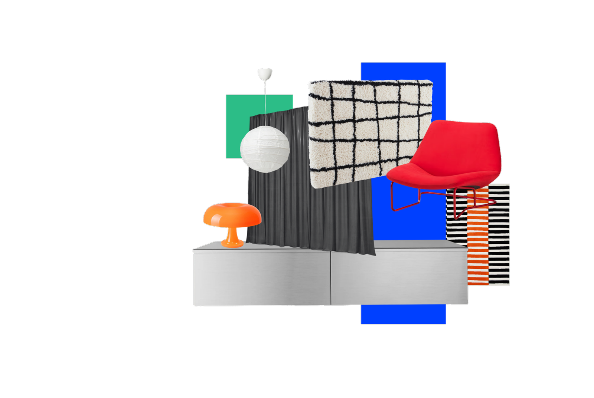
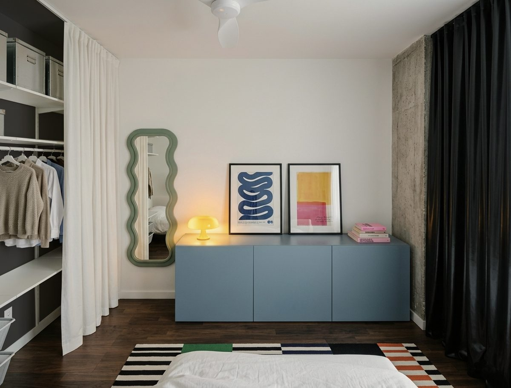
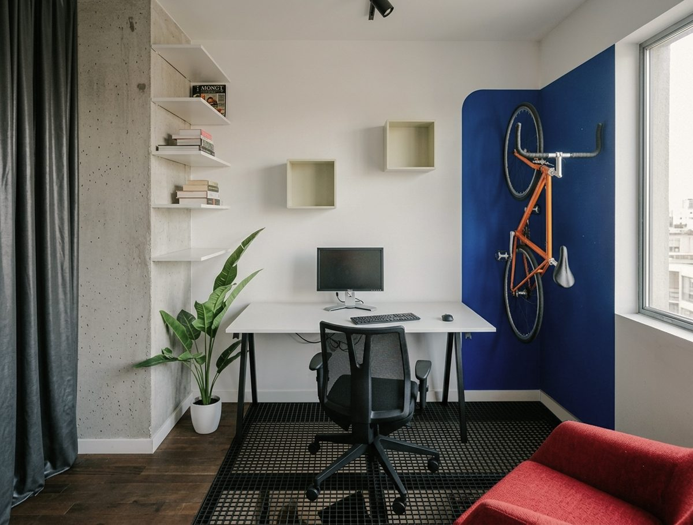
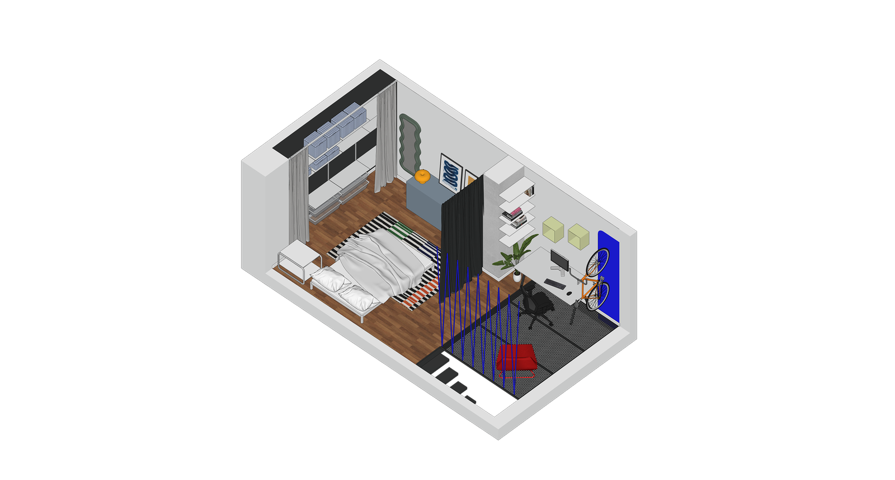
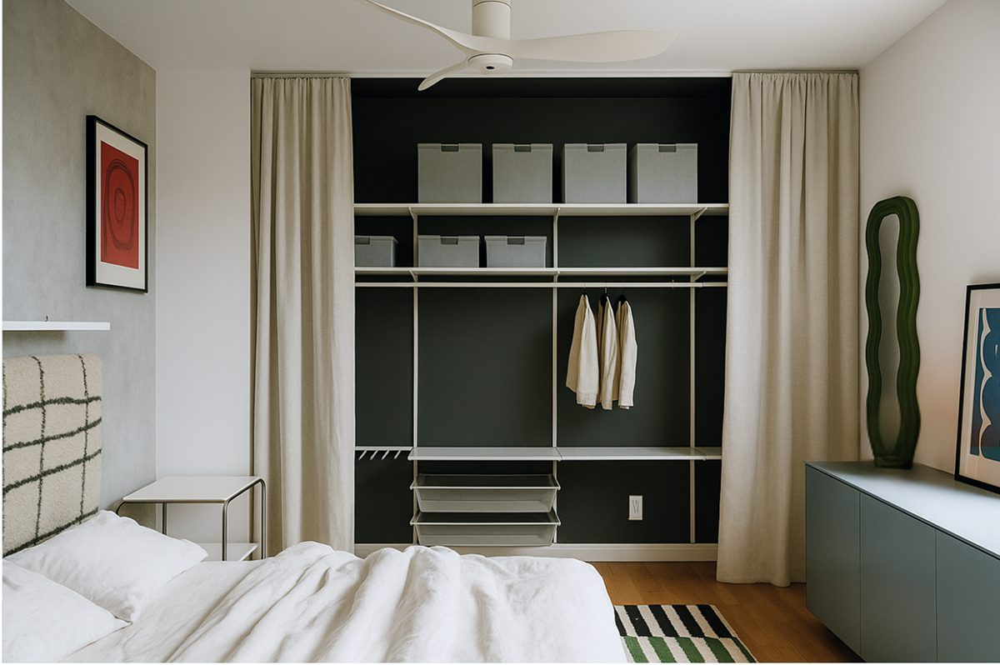
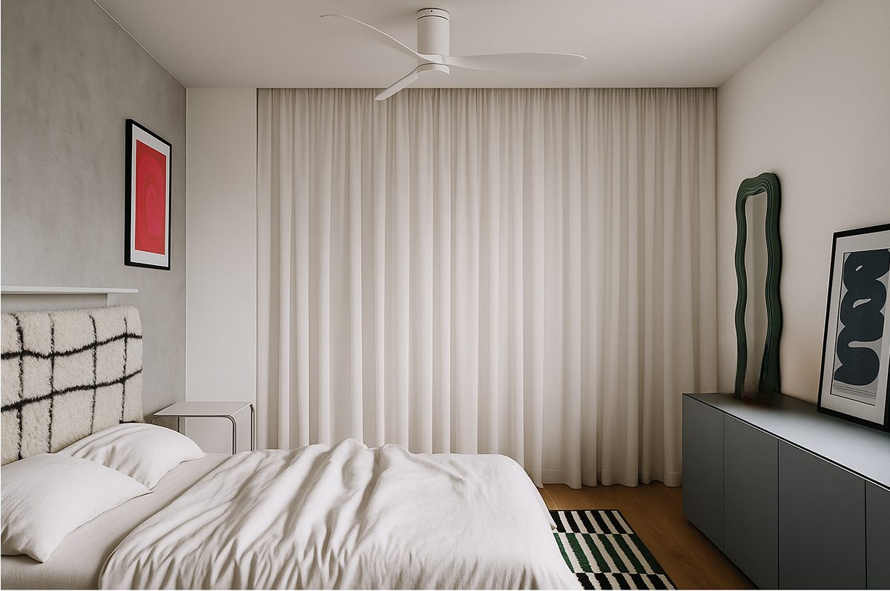
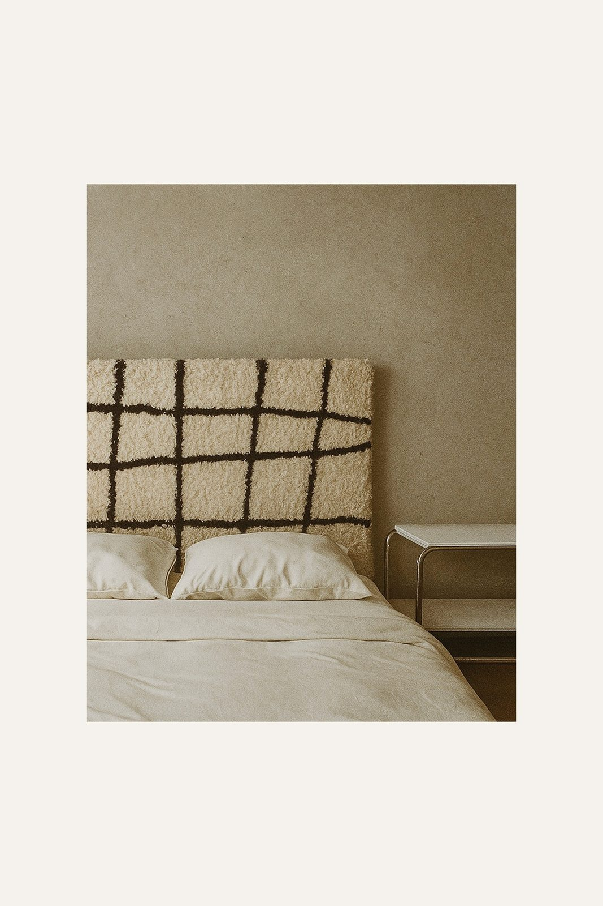
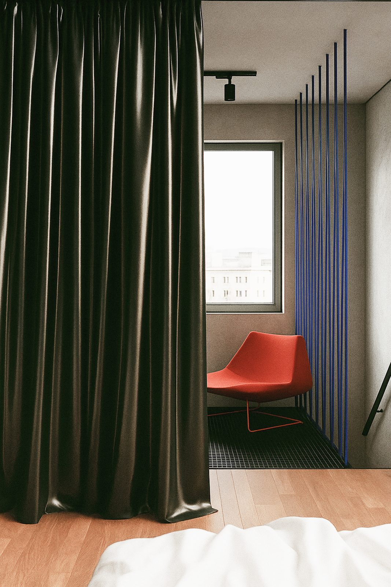

Niewielka przestrzeń na piętrze, do której prowadzą wąskie schody. Pomieszczenie naturalnie dzieliło się na strefę sypialnianą i miejsce do pracy, potrzebowało jednak wyraźnego rozgraniczenia. Sypialnię oddzieliłam od pracowni czarną lateksową kurtyną, to podział odważny i zarazem bardzo funkcjonalny. Miejsce do pracy stoi na istniejącej stalowej kracie, która potęguje loftowy charakter wnętrza i przepuszcza światło. Ultramarynowe linki przy schodach, jaskrawoczerwony fotel i ścienny uchwyt na rower nadają surowej bazie osobowość. Industrialne materiały balansują z miękkimi, przyjemnymi w dotyku elementami, a każdy zakamarek pracuje na funkcjonalność mimo ograniczonego metrażu. Efekt: osobiste, bezkompromisowe wnętrze, w którym loftowa estetyka, kolor i sprytny detal budują unikalną atmosferę.








podoba Ci się ten projekt? porozmawiajmy o Twoim
umów bezpłatną konsultację